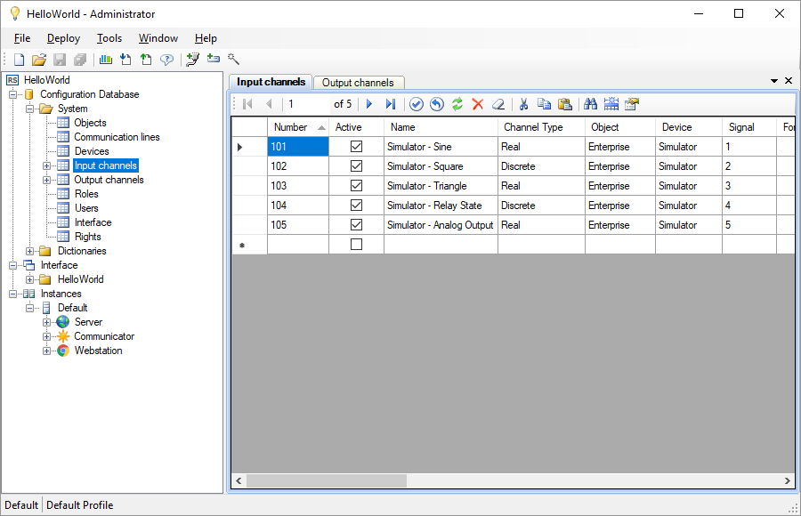

The Administrator application (see Figure 1) is intended for developing Rapid SCADA projects and monitoring the state of the automated system. The Administrator is an integrated development environment provides editing the configuration database, configuring the main Rapid SCADA applications, Server modules and device drivers.

Figure 1. Administrator application
The Administrator tools to speed up the configuration process:
A project contains a set of configuration files, mainly using the XML format. This approach makes it easy to copy projects from one computer to another. To control project versions and collaboration, Git is the best choice.